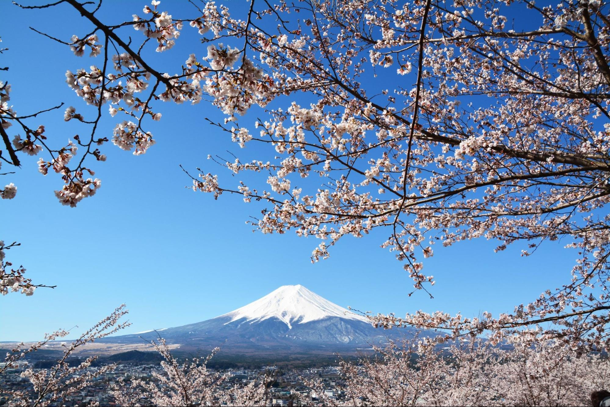
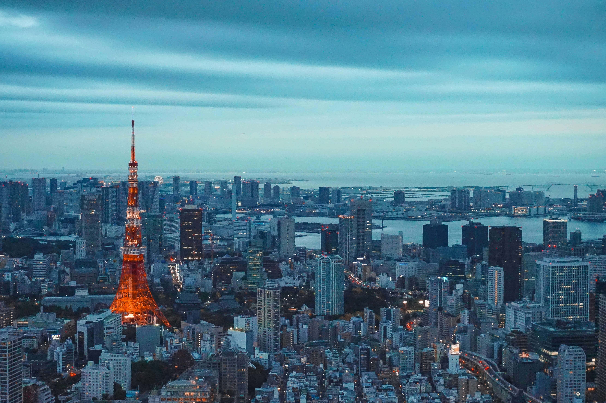
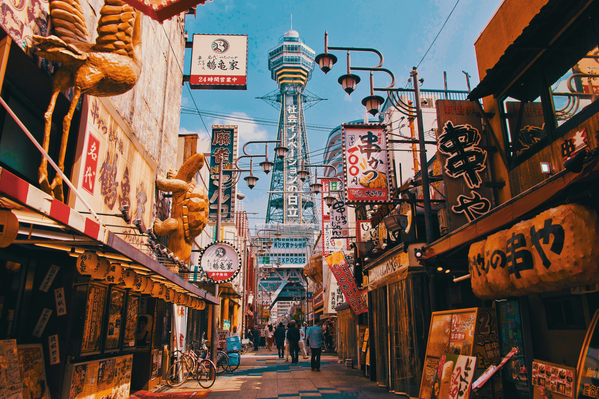
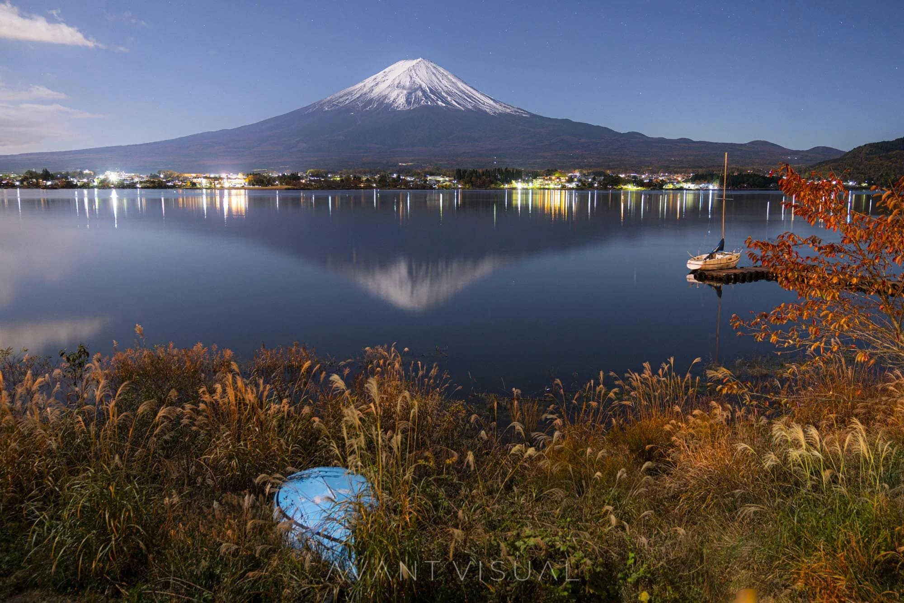

Japan - Land of the Rising Sun

Introduction
Japan is an island nation in East Asia, known for its blend of ancient traditions and modern technology. Visitors can enjoy historic temples, serene gardens, bustling cities, and cutting-edge innovations.
From cherry blossom season to neon-lit streets, Japan offers a unique cultural experience combining history, nature, and contemporary life.
Quick Facts
- Capital: Tokyo
- Population: Approximately 125 million
- Language: Japanese
- Currency: Japanese Yen (JPY)
- Best Time to Visit: Spring (March-May) and Autumn (September-November)
Explore Major Destinations
Jump to a specific destination
\r\n
Tokyo

Region: Kanto
Tokyo is Japan's bustling capital, known for its modern skyscrapers, historic temples, and vibrant neighborhoods. It is a hub of technology, fashion, and cuisine.
Highlights include Tokyo Tower, Shibuya Crossing, Senso-ji Temple, and Meiji Shrine. The city offers a mix of traditional culture and contemporary entertainment.
Must-See Attractions
- Senso-ji Temple - Tokyo's oldest temple in Asakusa
- Tokyo Skytree - Tallest structure in Japan with panoramic views
- Shibuya Crossing - World's busiest pedestrian intersection
- Meiji Shrine - Peaceful Shinto shrine surrounded by forest
- Tsukiji Outer Market - Fresh seafood and street food
Back to top
Kyoto

Region: Kansai
Kyoto is Japan's cultural capital, home to over 1,000 temples, historic shrines, and traditional wooden architecture. It preserves the country’s ancient traditions.
Famous attractions include Fushimi Inari Taisha, Kinkaku-ji (Golden Pavilion), Arashiyama Bamboo Grove, and the Gion geisha district.
Must-See Attractions
- Fushimi Inari Taisha - Thousands of vermillion torii gates
- Kinkaku-ji (Golden Pavilion) - Gold-leaf covered temple
- Arashiyama Bamboo Grove - Towering bamboo forest pathway
- Kiyomizu-dera - Historic temple with panoramic city views
- Gion District - Traditional geisha entertainment area
Back to top
Osaka

Region: Kansai
Osaka is Japan's culinary capital, famous for street food, shopping districts, and nightlife. It blends historical landmarks with modern attractions.
Highlights include Osaka Castle, Dotonbori, Kuromon Ichiba Market, Universal Studios Japan, and Shinsekai neighborhood.
Must-See Attractions
- Osaka Castle - Historic landmark with gardens
- Dotonbori - Entertainment district with neon lights
- Kuromon Ichiba Market - Local food and fresh produce
- Universal Studios Japan - Popular theme park
- Shinsekai - Retro district with Tsutenkaku Tower
Back to top
Mount Fuji

Region: Between Shizuoka and Yamanashi Prefectures
Mount Fuji is Japan's highest mountain and national symbol. It is a sacred and iconic site, popular for climbing, sightseeing, and photography.
The Fuji Five Lakes region and Chureito Pagoda offer stunning views. Climbing routes are open from July to September, and the surrounding hot springs provide a relaxing experience.
Must-See Attractions
- Fuji Five Lakes - Scenic lakes with Mount Fuji views
- Chureito Pagoda - Iconic viewpoint with pagoda
- Oshino Hakkai - Eight ponds fed by Mount Fuji snowmelt
- Fuji-Q Highland - Amusement park with roller coasters
- Climbing Routes - Four main trails for ascending the summit
Back to top
Travel Tips for Japan
- JR Pass: Consider purchasing a Japan Rail Pass for unlimited train travel.
- Cash: Many places prefer cash, so carry Japanese Yen.
- Etiquette: Bow when greeting, remove shoes indoors, and be quiet on public transport.
- Wi-Fi: Rent a pocket Wi-Fi or SIM card for mobile internet.
- Language: Learn basic Japanese phrases; English is common in tourist areas.
← Back to Asia | Home